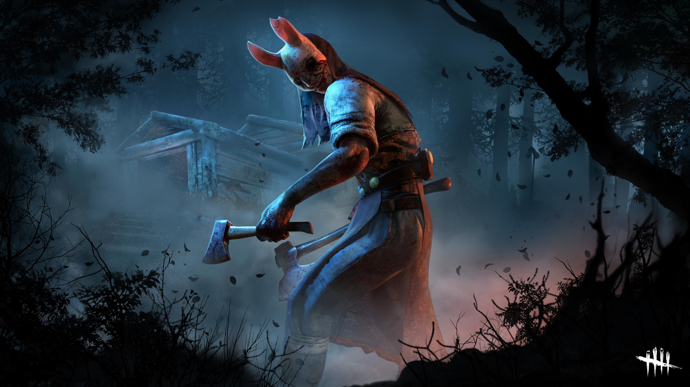
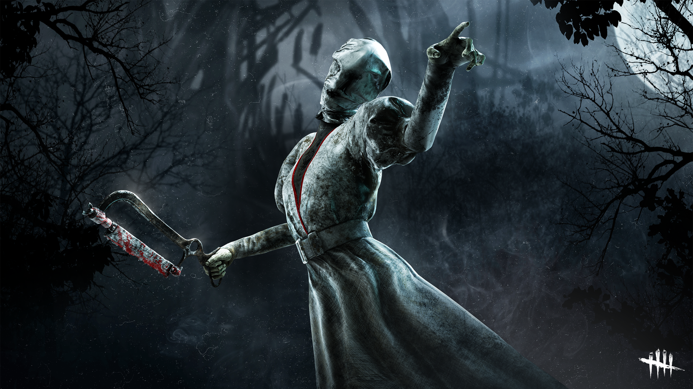
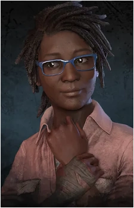
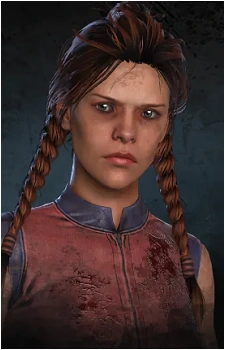

Trapper
Trapper er en av de første killerne i Dead by Daylight. Trapper bruker bjørnefeller for å fange survivors.
Velg din favoritt killer!
Trapper er en av de første killerne i Dead by Daylight. Trapper bruker bjørnefeller for å fange survivors.

Huntress kaster økser med presisjon og skaper frykt i skogen. Du vet hun nærmer seg når du hører hennes kjente lullaby.

Nurse kan teleportere gjennom vegger og overrasker survivors. Ikke føl deg trygg bak vegger.
Velg din favoritt survivor!
Dwight er en av de mest ikoniske survivorene i Dead by Daylight. Han er kjent for sine feller og evnen til å sette opp strategiske angrep på killerne.

Claudette er en av de mest ikoniske survivorene i Dead by Daylight. Hun er kjent for sine feller og evnen til å sette opp strategiske angrep på killerne.

Meg Thomas er en av de mest ikoniske survivorene i Dead by Daylight. Hun er kjent for sine feller og evnen til å sette opp strategiske angrep på killerne.